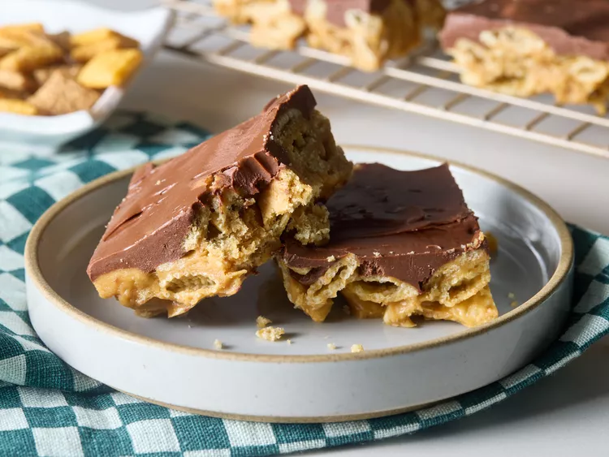

Description
Easy to make peanut butter bars without baking. You will love them.
Ingredients
- 3/4 cup honey
- 3/4 cup sugar
- 1 1/4 cups creamy peanut butter
- 1/2 teaspoon salt
- 6 cups crispy rice cereal squares, such as Chex®
- 2 cups semisweet chocolate chips
- 1/3 cup creamy peanut butter
- 2 tablespoons butter
Steps
- Gather all ingredients. Line a 9x13-inch baking pan with foil and lightly coat with nonstick cooking spray.
- Combine honey and sugar in a 4-to 6-quart Dutch oven. Heat over medium heat just until the mixture begins to boil, stirring frequently. Stir in 1 1/4 cups peanut butter and salt until fully combined.
- Add cereal to the pot and stir until evenly coated.
- Transfer mixture to the prepared pan, spreading and packing in an even layer. Set aside to cool.
- Meanwhile, combine chocolate chips, 1/3 cup peanut butter, and butter in a medium microwave-safe bowl. Microwave on high until fully melted,1 to 1 1/2 minutes, stirring every 30 seconds.
- Pour chocolate mixture over the bars, spreading evenly. Chill bars until topping is set, 1 hour.
- Use foil to remove bars from the pan before cutting and serving. Store at room temperature for up to 5 days.
:max_bytes(150000):strip_icc():format(webp)/11743320-No-Bake-Peanut-Butter-Chex-Bars-ddmfs-07-25707-4432590d9ef34b5082f92abfb00789f2.jpg)